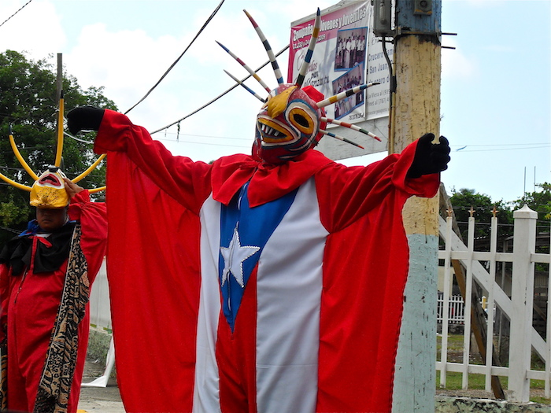
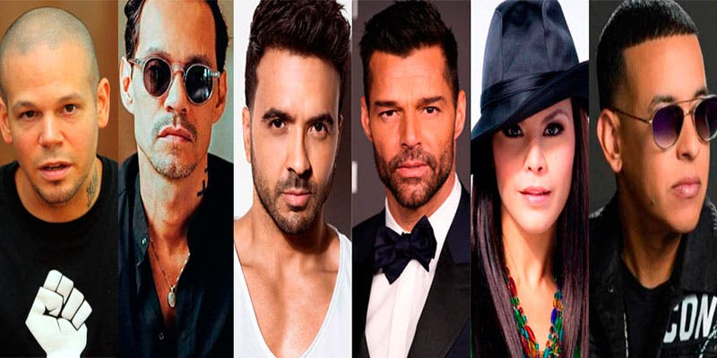

<!DOCTYPE html>
<html>

<head>
  <meta charset="utf-8">
  <meta name="viewport" content="width=device-width">
  <title>replit</title>
  <link href="style.css" rel="stylesheet" type="text/css" />
</head>

</html>
<div class="titulo">
  <h1>
    <i> Turismo en P.R. </i> 
  </h1>
 <h5>
    <small> Por Ishka S. Arce Minguela</small>
  </h5>

  </div>
  <div class="contenido">
    <p><h3><strong>¿Que es Puerto Rico?</strong></h3>
    Puerto rico es una isla pequeña donde se cuentran personas con un corazon grande lleno de gozo. Es bella, con muchas montañas y con una tierra super fertil. A pesar de nuestra historia, nosotros nos hemos levantado y caido una y otra vez, pero eso no nos a detenido. Al contrario, seguimos luchando por nuestros derechos. Muchas personas no saben de Puerto Rico o simplemente no les importa el lugar donde ellos se criaron. Es por eso que quiero demostrar las bellezas y encantos que se ecuentran aqui pero primero, hablaremos sobre nosotros.
  </p>
    <p><h3><strong>¿Como es nuestra cultura?</strong></h3>
  Como nunca hemos sido independientes, hay muchas de las cosas que se han perdido o nunca han estado desde el principio. Como por ejemplo, no tenemos nuestro propio dinero o desayunos. Aunque llego un tiempo en donde si teniamos nuestros dinero, ya es algo que no existe. Aun asi tenemos cosas que no identifican como, ademas de nuestro vocabulario,:</p>
    <ul> 
    <li> <strong>Los Vejigantes </li></strong>
      <p> Los vejigantes representan a los diablillos, a los moros, y hacen travesuras y asustan a la gente. Su nombre se deriva de vejiga, ya que estos personajes llevaban vejigas infladas con las que asustaban al público. Usualmente aparecen en los tiempos de fiesta.  </p>
      
      <li> <strong>Platos tipicos</strong></li>
      <p> Los platos de nuestra isla convellan diferentes sabores y tipos de comida. Estas se consumen mas en navidad pero esta el  arroz con gandules, arroz con dulce, ensalda de papas, pitorro, pasteles, pernil, coquito y mucho mas. Tambien aqui se ha creado la cerveza llamada "Medalla", entre otras.</p>
      
      
      <li> <strong>Artistas</strong></li>
      <p> De artista tenemos mucha gente taletosa que nos ha representado tras los años. Como Bad, bunny, Marc Antony, Jennifer Lopez, Victor Manuel, Lin-Manuel Miranda, Daddy Yankey, El Gran Combo y Las Hormigas bravas</p>
      
    <h4>
    </ul>
      <p><a href= "https://curiosfera-historia.com/historia-de-puerto-rico/"> *Para ver mas la historia de PR haz click aqui*</a></p>
    </h4>
  </div>
    <button><a href= " NextPage.html"> Next page</a></button>
  